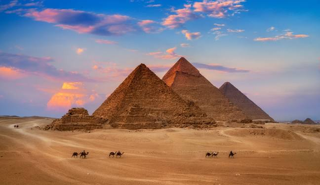
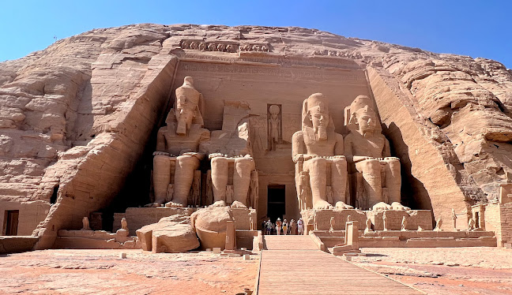
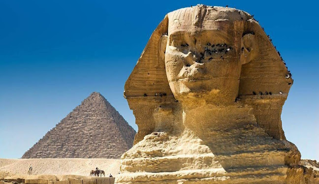
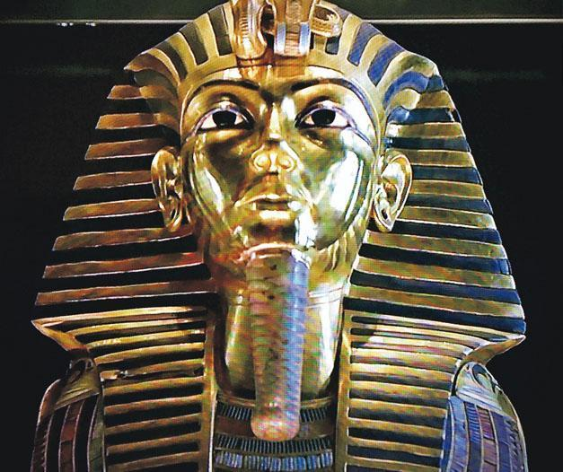
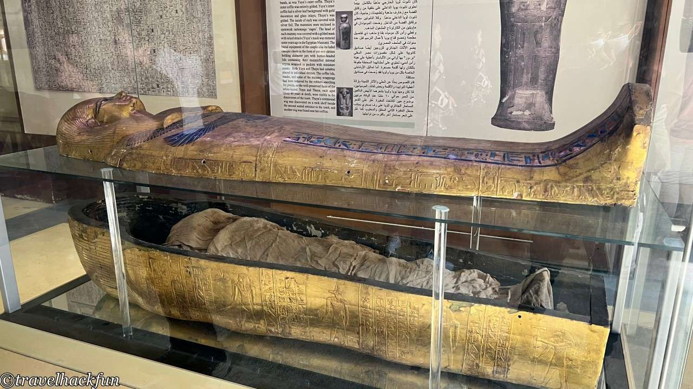
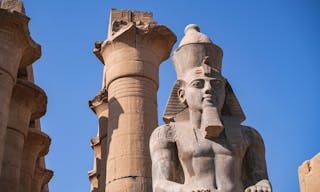
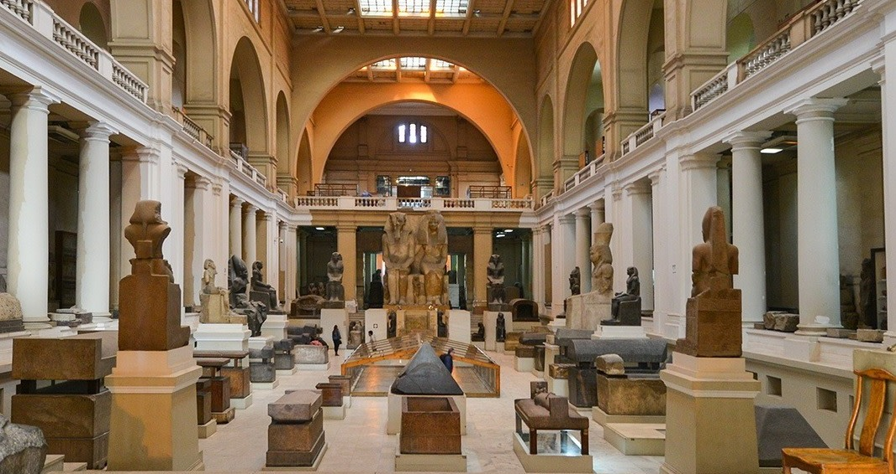
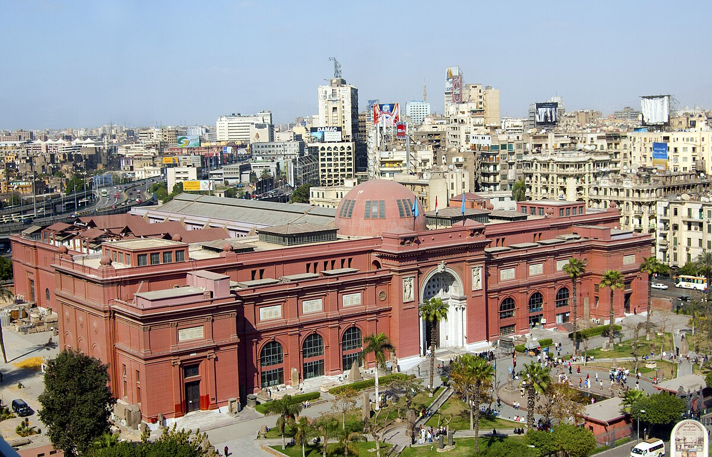
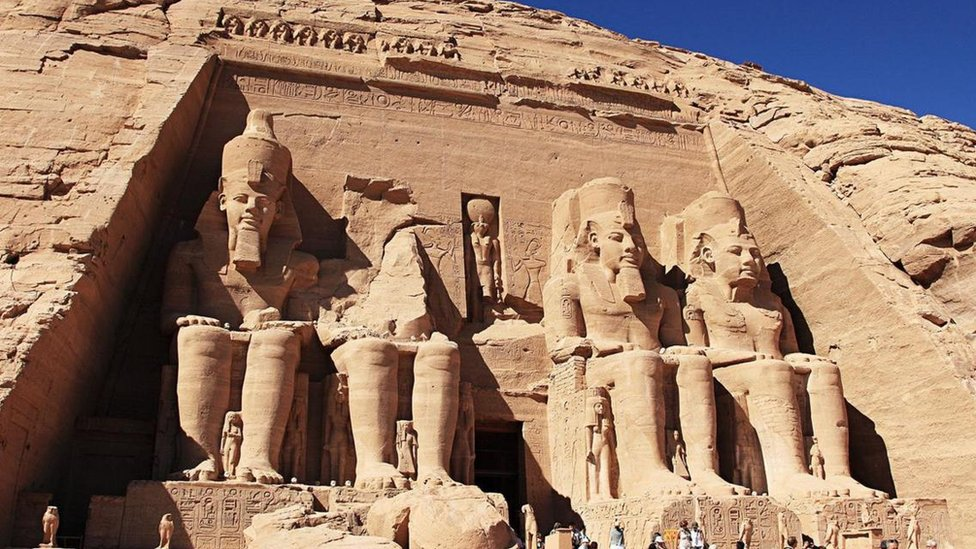
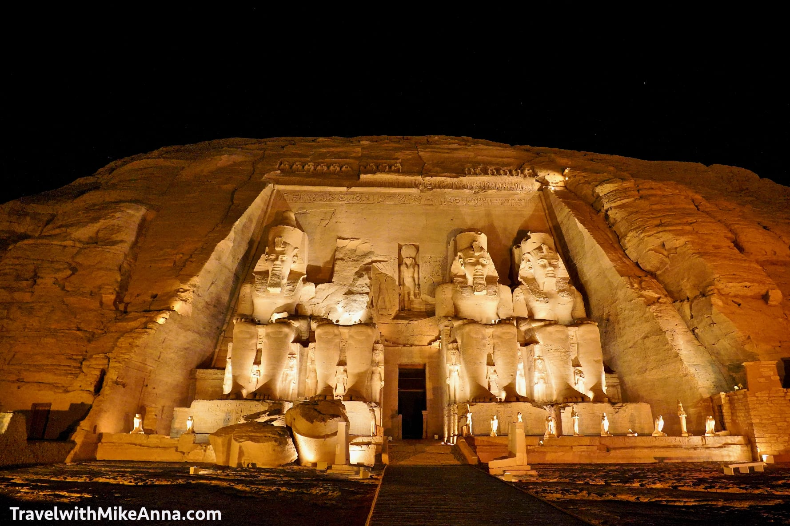

位於埃及首都開羅，是1858年由法國人馬里埃特創建的。博物館分為兩層，陳列著古埃及時期至古羅馬統治時代的遺物、展品。下層按年代展示展品，上層按主題展示， 又以上層展品為珍貴。博物館裡收藏了許多埃及古物及手工藝品居世界之首。此外，著名的圖坦卡門墓內的超過1700件珍品也長期於館內展出。

於1925年由英國考古學家霍華德·卡特在帝王谷的KV62墓中發現，現收藏於開羅的埃及博物館。圖坦卡蒙面具是世界上 最著名的藝術品之一，也是古埃及的象徵，在古埃及展覽中最受歡迎的作品之一。

這裡展出了包括拉美西斯二世（Ramses II）在內的十多具法老木乃伊，透過展示可以清晰地看見千年之前埃及的葬禮文化。

拉美西斯二世被認為是古埃及歷史上最偉大的法老之一，館內有他巨大的雕像，壯觀程度令人驚嘆。 原本在埃及孟菲斯附近的普塔神廟發現了它，是由石灰石製成，重達83噸。這尊雕像曾立於盧克索神廟，如今安置在博物館內供人欣賞。
➢ 博物館：埃及人4埃及磅，學生2埃及磅，外國友人60埃及磅，外國學生30埃及磅。
➢ 皇家木乃伊室：埃及人10埃及磅，學生5埃及磅，外國友人100埃及磅，外國學生50埃及磅。
➢ 百年畫廊：埃及人2埃及磅，學生1埃及磅，外國友人10埃及磅，外國學生5埃及磅。
平時9:00-19:00，齋月期間9:00-17:00。
搭乘地鐵至 السادات، 站，下車步行約5分鐘。


高30米，寬36米，縱深60米，門前4座巨型石質拉美西斯坐像，每尊高20米，像旁有其母、妻、子女的小雕像，無不栩栩如生，經過逾3000年的風蝕仍完好無損。
平時70埃磅，太陽奇蹟日80埃磅，且要在太陽升起前到達
7：00-18：00
從亞斯文可以搭乘長途巴士，路程約需4小時，路況極佳，有一陣子陸上洽安不佳，不過，現在已經可以通車了，可以在亞斯文的火車站旁， Sharia as-Souq大街上看到巴士站(有很多大巴士停在此虛)，旁邊的小平房就是售票虛，單程10埃磅，需要提前購買，通常是旱土8點發車

